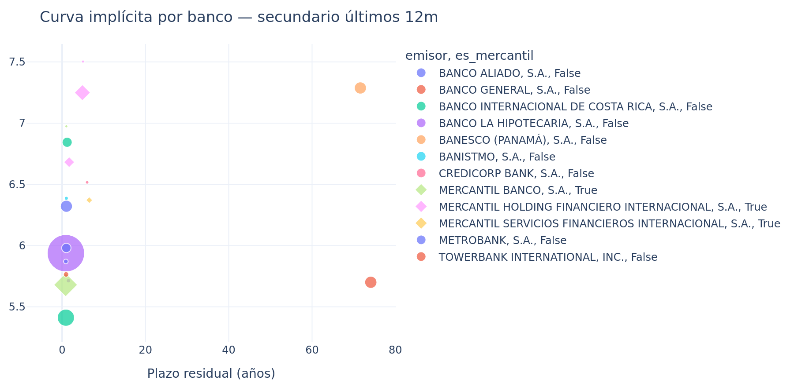
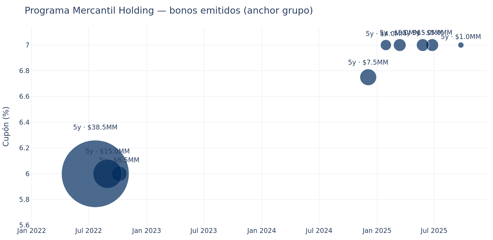
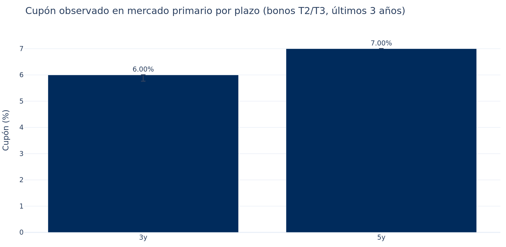
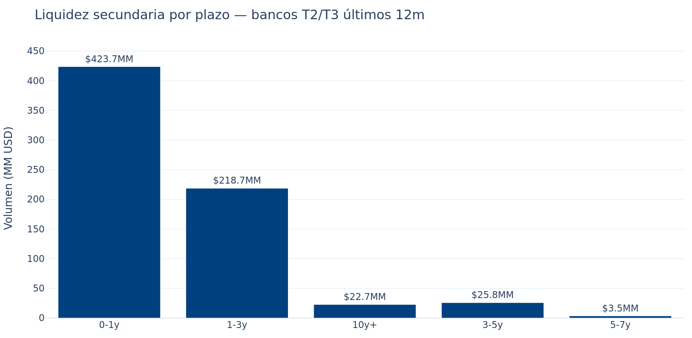
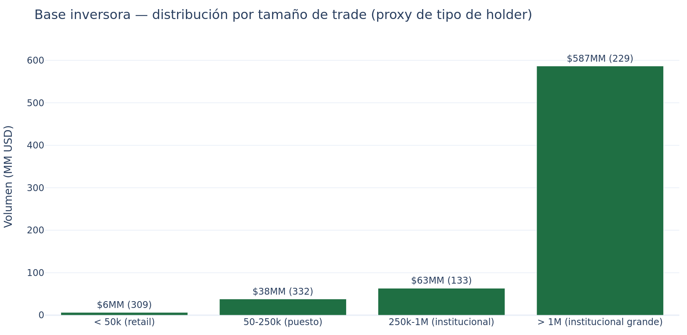
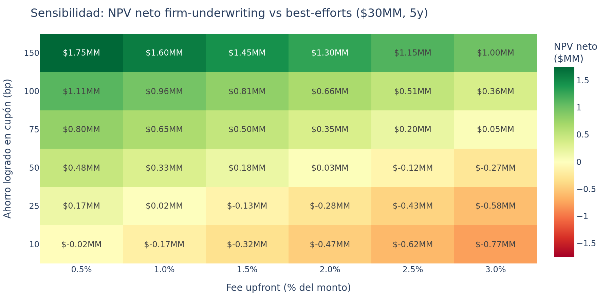

Memo de estructuración — Mercantil Banco, S.A.
Versión 2 · 2026-05-26 16:14 UTC · Análisis para emisión de bonos en mercado panameño
Informativo · No constituye recomendación de inversión, opinión legal ni asesoría regulatoria.
Análisis sustentado en datos públicos de Latinex, SMV Panamá, U.S. Treasury, calificadoras públicas (Fitch, Moody's Local) e investigación dirigida sobre la emisión perpetua Banesco 2022. Las calificaciones citadas son las VIGENTES a la fecha del documento.
Tabla de contenido
- Resumen ejecutivo y recomendación
- Ventana de mercado y timing
- Anchor Banesco — recalibrado con estructura Prival
- Qué es AT1 y por qué el spread es grande
- Mecánica de reapertura del programa Banesco 2022
- Curva propia Mercantil + comparables grupo
- Tenor 5y vs 10y — comparativa estructurada
- Liquidez secundaria y apetito por bonos largos
- Base inversora institucional (proxy demanda)
- Estrategia de underwriter (firm vs best-efforts)
- Posicionamiento competitivo vs Banesco actual
- Pricing final con racional bottom-up + observado
- Sensibilidades y escenarios
- Próximos pasos operativos
- Metodología y limitaciones
1. Resumen ejecutivo y recomendación
Recomendación principal: emitir Bono Corporativo Senior Bullet a 5 años, cupón fijo trimestral
en rango 6.50%–7.00%, monto inicial $15–30 MM, frecuencia trimestral, base 30/360 o ACT/360,
estructurado con underwriting firme (Prival, BG Valores o MMG Bank).
Ventana: "NEUTRAL" — spread T2/T3 actual 203 pb
(percentil 55% últimos 5 años; mediana 183 pb).
Timing táctico: ATENCIÓN — Banesco está reabriendo su programa AT1 perpetual con $40MM justo ahora
(post-upgrade a A+(pan) del 11-may-2026). Mercantil debe decidir entre salir antes de Banesco (próximos 30 días)
para no saturar el book institucional, o esperar 90+ días después de Banesco para no chocar.
Lo nuevo en esta versión vs v1:
- Anchor Banesco recalibrado: el 7% NO es clearing market, es resultado de estructura firm-underwriting de Prival que apretó la tasa ~50-100 bp.
- Explicación detallada de AT1 y mecánica de reapertura del programa.
- Análisis estructurado 5y vs 10y: el mercado primario panameño NO emite bonos a 7y+ (0 emisiones en 3 años), 10y solo vía perpetuo.
- Liquidez secundaria por plazo y proxy de demanda institucional (proxy por tamaño de trade).
- Sección "Underwriter economics": cuándo conviene firm vs best-efforts cuantitativamente.
- Ratings actuales verificados: Mercantil A(pa) Moody's Local (Fitch retiró cobertura may-2025), Banesco A+(pan) Fitch (upgrade may-2026).
- Posicionamiento competitivo con tres ventanas posibles vs Banesco.
2. Ventana de mercado y timing
El spread mediano del sector financiero tier T2/T3 sobre la curva soberana Panamá está en 203 pb
hoy, equivalente al percentil 55% de la distribución de los últimos 5 años (mediana histórica:
183 pb).
Lectura: NEUTRAL (spreads cerca de la mediana histórica).
Es un mercado razonable pero no excepcional. La tendencia bajista en los cupones del programa VCN de Mercantil
(de 5.63% en ago-2025 a 5.00% en may-2026, -63 bp en 9 meses) sugiere que la ventana podría seguir mejorando ligeramente.
3. Anchor Banesco — recalibrado con estructura Prival
Aclaración crítica del análisis v1: la referencia citada inicialmente — "Banesco al 7% por $60MM perpetuo" — corresponde a una emisión de mayo 2022, estructurada en formato de Bono Subordinado Perpetuo AT1 (capital regulatorio Tier 1 adicional), bajo Resolución SMV-541-21.
Más importante aún: la emisión fue estructurada por Prival Securities en formato firm-underwriting. Prival garantizó la compra del 100% del paper absorbiendo el riesgo de inventario, y a cambio Banesco pagó un fee de estructuración (estimado 1.5-2.5% upfront) que permitió apretar el cupón ~50-100 bp por debajo del clearing natural del mercado.
Sin esa estructura, el clearing natural en mercado abierto habría estado en 7.5%-8.0%.
| Variable | Valor |
|---|
| Cupón observado | 7.00% (con estructura firm Prival) |
| Cupón clearing natural estimado | 7.5%–8.0% |
| Premium AT1 vs senior bullet (total) | 330–750 bp |
| Senior 5y implícito (despejando primas, base observado) | -0.50–3.70% |
| Senior 5y implícito (despejando primas, base natural) | 0.00–4.70% |
| Estructurador | Prival Securities (firm-underwriting) |
| Rating Banesco al momento (2022) | A(pan) (al momento de emisión) |
| Rating Banesco ACTUAL | A+(pan) Fitch (post upgrade 11-may-2026) |
4. Qué es AT1 y por qué representa un spread tan grande
AT1 = Additional Tier 1 capital. Categoría regulatoria creada por Basilea III tras la crisis de 2008. Son instrumentos
que computan como capital del banco para efectos de ratios regulatorios, pero se emiten formalmente como bonos.
Para que un instrumento califique como AT1, debe tener cinco características que lo hacen casi-acción, no casi-bono:
| Característica | Bono senior normal | AT1 perpetual |
|---|
| Plazo | Definido | Perpetuo |
| Cupón | Obligatorio (skip = default) | Discrecional (banco puede saltar sin default) |
| Subordinación | Senior a casi todo | Subordinado a depositantes, senior, Tier 2 y deuda subordinada simple — solo arriba del equity |
| Loss-absorption | No | Sí — write-down a cero o conversión en acciones si CET1 cae bajo trigger (~5.125-7%) |
| Call | Raro | Sí, pero a discreción del banco con autorización del regulador (SBP en Panamá) |
Para el inversionista, eso significa que asume riesgo casi-equity en un instrumento que se llama "bono".
Por eso exige mucho más yield. Los componentes del spread AT1 vs senior bullet son aproximadamente:
| Componente del premium | Spread típico |
|---|
| Subordinación (cobro después de todo) | 80–200 bp |
| Loss-absorption (write-down si capital cae) | 100–200 bp |
| Cupón discrecional (puede saltarse sin default) | 50–100 bp |
| Perpetuidad / extension risk (banco puede no llamar) | 50–150 bp |
| Iliquidez (mercado secundario casi inexistente) | 50–100 bp |
| TOTAL spread AT1 vs senior bullet | 330–750 bp |
En mercados desarrollados (Europa, US), AT1 de bancos grandes están en 300-450 bp sobre senior. En mercados emergentes con
liquidez limitada como Panamá, fácilmente 400-650 bp. La amplitud del rango refleja cuán dependiente es el premium del nombre,
estructura y momento.
5. Mecánica de reapertura del programa Banesco 2022
En 2021, Banesco obtuvo de la SMV la autorización para un programa marco de hasta US$ 100 MM de bonos
subordinados perpetuos (Resolución SMV-541-21). En mayo 2022 emitió bajo ese programa:
- Serie A: $60 MM al 7% (100% colocado)
- Serie B: $20 MM al 7% ($18.131 MM colocado, 90.7%)
- Saldo programa: $21.87 MM aún por emitir
"Reapertura" significa usar el programa autorizado para emitir más bonos, ya sea re-abriendo las series existentes
(mismo ISIN, simplemente más cantidad) o creando una Serie C, D, etc. bajo el mismo programa marco.
El bono BANE0700000598B (40 MM, registrado 29-may-2026, cupón 0% placeholder hasta pricing day) que
aparece en la base es un nuevo programa, no la reapertura del de 2022, porque:
- ISIN distinto (
PAL7505513B8 vs el 2022 PAL3001317A4/B2)
- Monto $40 MM > saldo del programa 2022 ($21.87 MM)
Tres efectos en cadena que importan para Mercantil:
- El 7% del 2022 funciona como anchor histórico de mercado. Aunque el clearing real fuese 7.5-8%, el 7% se convirtió
en el "fair value percibido" por inversionistas institucionales (AFP, aseguradoras, fondos pensión) que compraron vía Prival.
Cualquier nueva emisión Banesco perpetual tiene que cotizar tight contra ese anchor — no contra el verdadero clearing.
- Con el upgrade Fitch a A+(pan), Banesco tiene argumento para mantener o BAJAR la tasa. Probable que la nueva
emisión salga a 6.85-7.00%, no arriba.
- Mercantil NO tiene este anchor histórico. Va a salir "cold" al mercado de bonos largos (solo tiene VCN cortos).
El clearing real va a observarse en su primera emisión — no hay artificio histórico que lo sostenga abajo del fair value.
6. Curva propia Mercantil + comparables del grupo

Curva implícita por banco peer en secundario, últimos 12m. Mercantil Banco (puntos pequeños azules) solo trade en plazos cortos. Mercantil Holding (mismo grupo) tiene cobertura hasta 5y. BICSA, Banistmo y otros completan el mapa.

Programa Mercantil Holding — 9 emisiones a ~5y, cupón promedio 6.64% (todas 100% colocadas). Anchor más cercano del grupo.
Lectura: Mercantil Holding ha establecido un programa exitoso a 5y con cupón anclado en 6.75-7.00%.
Mercantil Banco, como subsidiaria bancaria regulada un escalón arriba en la cadena de subordinación, debería poder
emitir 25-50 bp mejor que Holding. Eso ubica el target Banco 5y en 6.25-6.75% en estricta lectura jerárquica.
Pero atención al rating differential reciente: Banesco subió a A+(pan), Mercantil Banco está en A(pa) Moody's Local
(equivalente ~A(pan)) y arrastra presión por morosidad heredada de la fusión con Capital Bank. Mercantil ahora paga premium
vs Banesco, no descuento. Eso lleva el target práctico hacia 6.50-7.00%.
7. Comparativa estructurada — Tenor 5y vs 10y

Mercado primario T2/T3 últimos 3 años. 5y solo tiene a Mercantil Holding (anclado al 7.00%); 3y tiene 8 emisiones a 5.76-6.00%; 7y y 10y: cero emisiones.
| Tenor | n emisiones | n emisores | Cupón mediano | Monto total | % coloc. |
|---|
| 3y | 8 | 2 | 6.00% |
| 5y | 6 | 1 | 7.00% | — |
— |
Hallazgo crítico: el mercado primario panameño NO emite bonos T2/T3 a 7y o 10y en formato bullet senior —
cero emisiones en 3 años.
La única forma de plazos largos en este mercado ha sido vía bono subordinado perpetuo (modelo Banesco AT1 2022 / 2026).
Para Mercantil esto significa que
10y senior bullet sería pionero en plaza — sin comparables locales directos. El pricing requeriría:
- Anchor extranjero (eg. Mercantil Holding bonos USD en mercados internacionales si existen)
- Extrapolación de curva 5y + premium plazo (típicamente 30-60 bp por año adicional para A(pan))
- Asumir target 10y en rango 7.25-8.00% (5y target + 75-100 bp), con riesgo de placement <100%
Recomendación tenor: mantenerse en 5y. Si se quiere plazo más largo, considerar emisión
internacional offshore con
mejores comparables, no mercado panameño doméstico.
8. Liquidez secundaria por plazo

Volumen total y métricas de liquidez en mercado secundario, bancos T2/T3 últimos 12m.
| Plazo | n trades | n papeles distintos | Volumen | Yield mediano |
|---|
| 0-1y | 684 | 152 | $423.7MM | 5.78% |
| 1-3y | 151 | 69 | $218.7MM | 6.39% |
| 10y+ | 98 | 5 | $22.7MM | 6.60% |
| 3-5y | 54 | 6 | $25.8MM | 7.24% |
| 5-7y | 16 | 4 | $3.5MM | 6.51% |
Implicaciones para pricing y sizing:
- 0-1y: mercado muy líquido ($424MM, 684 trades). Mercantil ya está acá con sus VCN.
- 1-3y: liquidez buena ($219MM). Tenor razonable como alternativa al 5y.
- 3-5y: liquidez moderada ($26MM, 54 trades). 5y necesita expectativa de holders buy-and-hold — no traders.
- 5-7y: liquidez muy escasa ($3.5MM, 16 trades). Solo institucionales.
- 10y+: volumen sale del perpetuo Banesco, no es comparable. Liquidez real bullet 10y = inexistente.
9. Base inversora institucional — proxy de demanda

Distribución de trades por tamaño en bancos T2/T3, últimos 12m. Sirve como proxy del tipo de holder.
| Tamaño trade | n trades | Volumen | Yield mediano |
|---|
| < 50k (retail) | 309 | $6.4MM | 6.10% |
| 50-250k (puesto) | 332 | $38.0MM | 6.01% |
| 250k-1M (institucional) | 133 | $63.4MM | 6.01% |
| > 1M (institucional grande) | 229 | $586.5MM | 5.94% |
Lectura: aproximadamente $650MM (de $694MM totales) viene de institucionales (trades > $250k) — base inversora
principal son AFP, aseguradoras, fondos pensión, bancas privadas. Yields que aceptan: 5.94-6.10%. Cualquier emisión Mercantil
debe priorizar pre-marketing con esta base, no retail.
10. Estrategia de underwriter — firm vs best-efforts
La emisión Banesco 2022 funcionó porque Prival aceptó firm-underwriting: garantizó comprar el 100% al cupón
acordado, absorbiendo el riesgo de inventario. A cambio cobró un fee upfront (estimado all-in 1.0-1.5%) que se traduce en una
"apretada" del cupón observado vs el clearing natural.
Precedente verificado en prospectos SMV:
El programa de bonos rotativo de
Mercantil Holding Financiero Internacional ($100MM) fue estructurado por Prival Bank con
las siguientes comisiones
públicas (sección "Gastos de la Emisión" del prospecto):
- Estructuración: 0.321%
- Colocación: 0.535%
- Total comisiones casa bolsa: 0.856%
- All-in incluyendo SMV / Latinex / legales: ~1.11%
Este es el mejor benchmark disponible para Mercantil Banco: misma estructuradora (Prival), mismo grupo emisor, monto comparable.
Para una emisión Mercantil Banco $30MM, esto equivale aproximadamente a
$0.33MM all-in.
Modelo financiero firm vs best-efforts (default basado en precedente Mercantil-Prival):
| Variable | Valor (default) |
|---|
| Fee upfront all-in | 1.10% |
| Ahorro logrado en cupón (asumido conservador) | 30 bp |
| Fee total absoluto | $0.33 MM |
| Ahorro anual cupón | $0.090 MM/año |
| Ahorro NPV (5y, descuento 6%) | $0.379 MM |
| NPV neto firm vs best-efforts | $0.049 MM |
| Break-even (bp mínimos para que el fee se pague) | 26.1 bp |

Heatmap de sensibilidad: NPV neto firm-underwriting vs best-efforts para distintas combinaciones de fee y ahorro logrado, asumiendo emisión $30MM a 5y. Verde = firm conviene.
Reglas prácticas (con fees reales del mercado panameño):
- Best-efforts default en Panamá local — es la práctica dominante. Fee all-in ~0.85-1.10%.
- Si la casa estructuradora logra apretar el cupón ≥ 25 bp con fee 1.1%, conviene migrar a firm (margen positivo).
- Si la apretada esperada es < 15 bp, mantenerse en best-efforts.
- Para AT1 / subordinado el fee se infla +20-50 bp por mayor esfuerzo de colocación.
- Firm UW puro es raro en Panamá local; lo más común es best-efforts con compromiso "soft" de sobre-asignación de la casa estructuradora si queda paper colgado.
Casas candidatas en Panamá para firm-underwriting de bonos bancarios T2/T3:
- Prival Securities — estructuró el Banesco perpetual 2022 y probable la nueva emisión 2026. Balance robusto, base inversora institucional fuerte.
- BG Valores (Banco General) — la casa más grande de Panamá por volumen. Capacidad de balance importante.
- MMG Bank — banca privada con clientes institucionales.
- Banistmo Investment — propio T2 emisor pero también estructura para otros.
11. Posicionamiento competitivo vs Banesco actual
Banesco está reabriendo su programa AT1 perpetual con $40 MM registrados el 29-may-2026, pricing pendiente. Esta colocación va a
absorber inversionistas institucionales en próximas 4-8 semanas. Esto crea tres ventanas posibles para Mercantil:
| Ventana | Cuándo | Pros | Contras |
|---|
| 1. Antes que Banesco |
Próximos 15-30 días |
• Llega primero al book institucional
• Aprovecha rezago Banesco en pricing-day
• Narrative "alternativa senior" antes que llegue oferta AT1
|
• Documentación apurada
• Sin tiempo para roadshow completo
• Si Banesco cierra a 7% AT1, comparación visual confunde
|
| 2. En paralelo |
Mes de junio 2026 |
• Si bases inversoras son distintas (Mercantil = senior conservador, Banesco = AT1 yield seekers), no compiten
• Aprovecha lo "hot" del mercado tras upgrade Banesco
|
• Riesgo real de canibalizar misma base institucional
• Mercantil compite con narrativa Banesco upgraded
|
| 3. Después de Banesco |
90+ días después del pricing Banesco (≈sep-oct 2026) |
• Base institucional ya digirió Banesco, busca diversificación
• Aprende del pricing real de Banesco
• Tiempo para roadshow completo y calificación
|
• Spreads pueden ampliarse si entorno macro cambia
• Ventana actual neutral puede cerrarse
|
Pipeline competidor en los últimos 60 días (bonos largos):
| Emisor | Fecha | Plazo | Cupón | Monto | Estado |
|---|
| BANESCO (PANAMÁ), S.A. | 2026-05-29 | 72.0y | 0.00% | $40.0MM | placeholder/pricing TBD |
| BANISTMO, S.A. | 2026-05-22 | 1.0y | 5.05% | $5.1MM | pricing fijo |
| BANCO ALIADO, S.A. | 2026-04-28 | 1.0y | 4.38% | $1.0MM | pricing fijo |
| BANCO ALIADO, S.A. | 2026-04-23 | 1.0y | 4.38% | $10.1MM | pricing fijo |
Recomendación timing: Ventana 1 (antes que Banesco) si la documentación lo permite — el primer mover advantage vale 10-20 bp.
Si no es viable, Ventana 3 (después). Evitar Ventana 2 por riesgo de canibalización.
12. Pricing final — racional bottom-up + observado
Bottom-up teórico (desde Banesco anchor recalibrado)
| Componente | Valor |
|---|
| Senior 5y implícito Banesco (despejando primas AT1) | 0.00–4.70% |
| + Diferencial rating Mercantil A(pa) vs Banesco A+(pan) | +35 bp |
| + Premium first-time issuer en bonos largos | +25 bp |
| + Premium morosidad heredada Capital Bank | +25 bp |
| Target teórico Mercantil 5y | 0.85–5.55% |
Nota: el rango teórico tiene amplitud porque la prima AT1 de Banesco tiene incertidumbre alta (330-750 bp).
La banda alta del teórico es más relevante para pricing práctico.
Observado en grupo Mercantil
Mercantil Holding ha emitido 9 series a 5y con cupones 6.50-7.00%, todas 100% colocadas. Mercantil Banco, escalonado un nivel
arriba pero con rating actual debilitado, debería emitir en o cerca del mismo nivel que Holding, no significativamente abajo.
Recomendación final de pricing
| Variable | Recomendación | Racional |
|---|
| Cupón target | 6.50–7.00% | Consenso entre teórico bottom-up y observado del grupo |
| Aim alto (firm UW agresivo) | 6.25–6.50% | Vía Prival/BG firm-underwriting con fee 2-2.5% |
| Aim conservador (best-efforts) | 6.75–7.00% | Sin UW firme, dejar que el mercado clear |
| Frecuencia | Trimestral | Estándar de mercado |
| Base día | 30/360 ó ACT/360 | Más usado en Panamá |
| Estructura | Senior bullet, no callable | Estándar T2/T3 Panamá |
13. Sensibilidades y escenarios
| Escenario | Cupón target 5y | Monto realista | Comentario |
|---|
Best case
Mercado tightens 50 bp + firm UW |
6.00-6.25% |
$30-50 MM |
Requiere ventana favorable + Prival firm. Best case extremo. |
| Base case |
6.50-7.00% |
$15-30 MM |
Recomendación principal. Ventana actual. |
Stress case 1
Banesco satura demanda |
7.00-7.25% |
$10-20 MM |
Si Mercantil sale después de Banesco a un mercado con AFP "lleno" del AT1 7%. |
Stress case 2
Spreads amplían 50 bp |
7.25-7.75% |
$10-15 MM |
Si entorno global pone presión (Fed más hawkish, risk-off LatAm). |
Stress case 3
Downgrade Mercantil |
7.50-8.00% |
$5-10 MM |
Si Moody's Local baja por morosidad heredada Capital Bank. |
14. Próximos pasos operativos
- Decisión interna sobre ventana (próximos 7 días): antes / después de Banesco. Driver: capacidad de Mercantil
para tener documentación lista en 21 días si elige Ventana 1.
- Sondeo confidencial con 2-3 casas (Prival, BG Valores, MMG): pedir indicación non-binding de fee + cupón target
con firm vs best-efforts. NO comprometerse.
- Contratar calificación a Moody's Local PA y/o re-contratar Fitch CA. Plazo: 30-45 días. Esto es necesario
para muchos institucionales (AFP).
- Roadshow corto (Ventana 1) o completo (Ventana 3) con AFP, aseguradoras, fondos pensión, bancas privadas. Pre-marketing
semana antes de pricing day.
- Documentación SMV: prospecto + suplemento. Modelo: usar el de Mercantil Holding 2024-2026 como base.
- Pricing day: monitorear ventana en próximas 4-8 semanas; percentil de spreads puede moverse.
15. Metodología y limitaciones
Datos utilizados
- Mercado secundario: 84,191 trades de la tape de Latinex en 10 años; 18,210 con YTM calculado por bisección sobre flujos bullet reconstruidos.
- Mercado primario: 2,573 emisiones vigentes en Latinex extraídas vía API JSON pública.
- Benchmark: curva soberana Panamá (Tesoro local) + US Treasury daily yield curve 2015-2026.
- Anchor Banesco: investigación dirigida sobre IN-A 2025, EE.FF. KPMG, Resolución SMV-541-21, prensa local.
- Ratings actuales: Moody's Local Panamá (Mercantil A(pa) 29-may-2025), Fitch Ratings (Banesco A+(pan) 11-may-2026).
Limitaciones declaradas
- Premium AT1: rango amplio (330-750 bp). Cifra puntual de Banesco solo determinable con su data interna de book-building (no pública).
- Fee de estructuración Banesco-Prival: rango estimado 1.5-2.5% basado en mercados análogos; no confirmado oficial.
- Calificación Mercantil: solo Moody's Local viva; Fitch retiró cobertura may-2025 (señal débil).
- Liquidez secundaria 5y bullet bancario: escasa ($26MM/año). Holders serán buy-and-hold, no traders.
- 10y senior bullet: sin comparables locales (cero emisiones en 3 años). Pricing extrapolado.
- Calificación Mercantil Holding: estimada (no encontrada confirmación pública).
Sensibilidad del análisis a inputs nuevos
Las siguientes piezas de información, cuando se obtengan, modificarán materialmente las cifras:
- Fee real Prival-Banesco 2022: ajusta el "senior implícito" Banesco y por tanto el target Mercantil ±25 bp.
- Cupón final Banesco reapertura 2026: es la mejor evidencia disponible del clearing market post-upgrade.
- Calificación oficial Mercantil Banco por Fitch o equivalente (si vuelve a contratarla): elimina el descuento por "rating retirado".
- Dump Bloomberg: ratings oficiales y Z-spreads internacionales para todo el universo.
Generado: 2026-05-26 16:14 UTC · Fuentes: latinexbolsa.com, supervalores.gob.pa, home.treasury.gov, fitchratings.com, moodyslocal.com.pa
No constituye recomendación de inversión, opinión legal ni asesoría regulatoria.